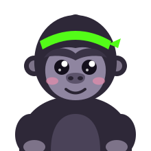

Bingo
Tu cartón personal

Conectando con la partida...
Iniciar sesión con Kick● Marcado por ti◉ Bola sorteada
Última bola —
Esperando el sorteo.
Completa una fila, columna o diagonal y escribe !bingo en el chat del stream.
Toca un número para marcarlo o desmarcarlo. LIBRE ya cuenta. Las marcas son visuales: el bot verifica las bolas reales, no tus clics.
Abrir chat del stream ↗